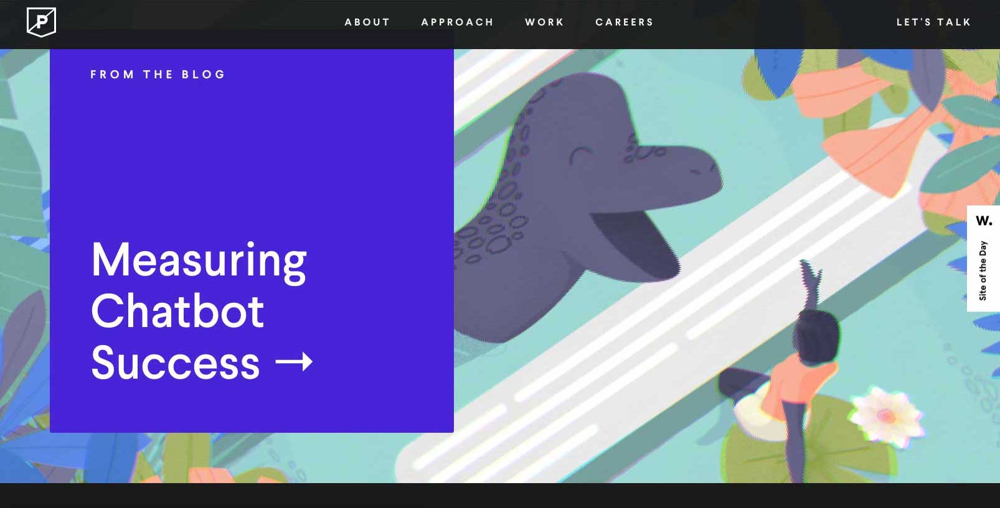

purple rock scissor
The design of Purple Rock Scissor is linear but blends seamlessly together. It is a very clean design while still jam packed with 3D designs.
In terms of usability, it is simple to navigate since it is pretty linear in its disposition of text and information. The graphics regarding the curser are really interesting and cool because they add a 3d texture to images but can make you dizzy for pictures.
The graphic design is really cool and coherent throughout the site. Makes the experience captivating throughout each page. Variations of colours can be seen in the same area depending on if it is your second time going through the page or more.
The content is clear but sometimes placed in odd areas or too small its position